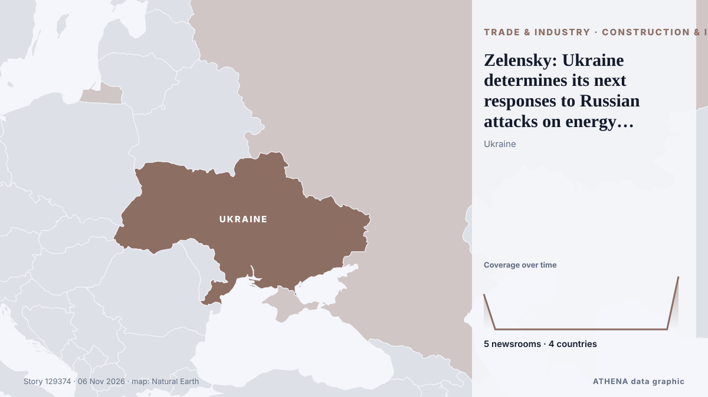

Commerce, industrie et infrastructures
SponsoriséPrésenté par  Cybernetics and Artificial Intelligence Lab Welcome to the Cybernetics and Artificial Intelligence Laboratory, established at the Department of Business Administration of the National and Kapodistrian University of Athens. The lab is headed by Professor Dimitrios Thomakos. The lab aims to do research that can be published in top venues. Our research uses tools and methods of Artificial Intelligence, and lies in the following areas: - Forecasting - Decision making - Cyber security - Finance We are always looking forward to collaborating with exceptional students!
Cybernetics and Artificial Intelligence Lab Welcome to the Cybernetics and Artificial Intelligence Laboratory, established at the Department of Business Administration of the National and Kapodistrian University of Athens. The lab is headed by Professor Dimitrios Thomakos. The lab aims to do research that can be published in top venues. Our research uses tools and methods of Artificial Intelligence, and lies in the following areas: - Forecasting - Decision making - Cyber security - Finance We are always looking forward to collaborating with exceptional students!
Les titres sont affichés en anglais, tels que publiés.

Construction et infrastructuresZelensky: Ukraine determines its next responses to Russian attacks on energy infrastructure
President Volodymyr Zelensky said that, in response to Russian attacks on Ukraine’s energy infrastructure, Ukraine is continuing its operation against Russia’s oil refining industry and has already… de Ukrinform (English)
| 24 oct. | 41 |
|---|---|
| 25 oct. | 57 |
| 26 oct. | 117 |
| 27 oct. | 103 |
| 28 oct. | 94 |
| 29 oct. | 95 |
| 30 oct. | 99 |
| 31 oct. | 36 |
| 1 nov. | 66 |
| 2 nov. | 127 |
| 3 nov. | 90 |
| 4 nov. | 90 |
| 5 nov. | 93 |
| 6 nov. | 42 |
Ukraine to resume medical air evacuation flights by year-end, PM says
The government has approved regulations governing the flights, which will be used to transport patients, medical personnel, donor organs and equipment between hospitals, as well as to take patients… de Kyiv Independent
Hoax or bomb threats? What we know about flight disruptions across Europe
Security inspections reveal no explosives as fighter jets escort planes amid Europe's major wave of bomb threats. de Al Jazeera English
Ukraine to lose 1.9 p.p. of GDP due to infrastructure damage, seaport blockade — NBU
The mining and metallurgical sectors have suffered the heaviest losses, the report noted. de TASS (English)
European skies on high alert as more airlines receive bomb threats – Europe live
Anonymous tip-off about explosives on Ryanair planes from Lisbon and Dublin prompted fighter jet escort; similar false alerts reported across Europe on Tuesday. de Wanted in Rome (working feed)
Aer Lingus says pilot ‘acted impeccably’ on flight diverted by bomb threat amid France investigation
Dublin-Rome flight diverted to France over bomb threat: French government. de Gulf News
Two other oil tankers on fire afte hitting mines in Hormuz
Tehran, IRNA – The Islamic Revolution Guards Corps (IRGC) Navy says a supertanker carrying more than two million barrels of crude oil caught fire after striking a naval mine while attempting to cross… de IRNA (English)
Two tankers headed to US under Trump-Putin diesel deal change course
Two tankers carrying Russian diesel fuel to the United States have changed course, the Financial Times reported. de Meduza (English)
Tanker struck by 2 unidentified projectiles off Qatar coast: UK maritime agency
Incident reported 50 nautical miles north of Madinat ash Shamal, with crew condition, vessel damage and environmental impact yet to be confirmed. de Anadolu Agency (English)
Russian night attack damages energy infrastructure in Kyiv region, three injured
The consequences of a Russian overnight attack were reported in three districts of the Kyiv region, with three people injured. de Ukrinform (English)
Iran's IRGC says two tankers and tugboat caught fire in Strait of Hormuz
Iran’s Islamic Revolutionary Guard Corps said on Thursday that two oil tankers and a tugboat had caught fire in separate incidents after attempting to use unauthorised routes through the Strait of… de Business Recorder
Hapag-Lloyd passes 1m teu in Africa and targets 1.7m teu by 2030
Hapag-Lloyd's African volumes have crossed 1m teu, the carrier said as it marked 20 years in South Africa. de Container Magazine
Peru airport thwarts plot to smuggle 3,000 tarantulas in dirty socks
During a routine customs inspection, agents noticed some unusual wriggling inside the luggage. de The Straits Times
India joins ISF Verify initiative for digital seafarer certification
India has joined the ISF Verify initiative, marking a significant step towards the wider adoption of digital seafarer certification across the global shipping industry. de Container News
LR Report Finds Alternative-Fuel Vessels Outpace Port Readiness
Alternative-fuel vessel orders are outpacing the development of the port infrastructure needed to support them, according to a new global study by Lloyd’s Register (LR)… de Maritime Professional
Report: South Korea's anti-piracy unit to expand operations closer to Hormuz Strait
SEOUL, Nov. 5 (Yonhap) -- South Korea plans to expand its anti-piracy mission of... de Yonhap (English)
Third wave of 'hoax' bomb threats hit 27 passenger flights across Europe
Bomb threats have affected at least 27 flights in Europe on Thursday , including in France, Bulgaria, Italy, Austria, Belgium and the Czech Republic. de ABC News Australia
Iran protests IMO’s biased reports on shipping security
London, IRNA – The Islamic Republic of Iran has criticized the International Maritime Organization (IMO) biased reports on the shipping crisis, stressing that seafarer protection should not be… de IRNA (English)
Fire at Panasonic factory in Taiwan injures five, with two missing
TAIPEI: A fire broke out on Wednesday at a Taiwan factory run by a unit of Japan’s Panasonic, injuring five, with two people missing, officials in the county of Hsinchu said. de Business Recorder
Israeli cruise ship Crown Iris left Syros island after a false bomb threat
Coast Guard cites potential threats to public order, island’s economy. de Anadolu Agency (English)
KLM announces 5,000 job cuts; 15% of its workforce disappearing
KLM is cutting 5,000 jobs, about 15 percent of its total workforce, the Dutch airline. de NL Times
Kazakhstan Prepares for High-Level Diplomatic Week with International Leaders
The Astana Times provides news and information from Kazakhstan and around the world. de The Astana Times
Emirates Group records $1 billion profit for 2026-2027 despite regional disruption
The Emirates Group saw customer demand holding firm and cargo operations making a strong contribution. de Arabian Business
Syrian arrested at Beirut Airport with 40kg suspected cocaine shipment from Ghana – NACOC confirms
The Narcotics Control Commission (NACOC) has confirmed the arrest of a Syrian national at the Rafic Hariri International Airport in Beirut, Lebanon, after he allegedly attempted to transport… de MyJoyOnline
Kellogg’s admits snap, crackle and pop is quieter after uproar over Rice Krispies recipe change
The cereal giant has changed the recipes for Rice Krispies and Coco Pops, sparking a backlash online. de BBC Business
Windward expands into Maritime Visual Intelligence with acquisition of Azimut.ai
The newly added sensing layer identifies and fingerprints vessels in real time at maritime chokepoints and ports, enabling the visibility. de Cyprus Shipping News
Chile maintains environmental approval for San Antonio Outer Port
Chile’s Committee of Ministers has maintained the favourable environmental approval for the US$4 billion San Antonio Outer Port project. de Container News
NAVTOR introduces real-time AIS streaming in NavFleet platform
Maritime technology company NAVTOR has introduced real-time AIS streaming to its NavFleet platform, allowing fleet managers to monitor vessel positions, movements and surrounding traffic with minimal… de MarineLink
King stops short of offering formal apology over transatlantic slave trade
In his address to presidents and prime ministers of the Commonwealth Charles said the transatlantic slave trade fills his heart with horror. de Evening Standard (London)
Indian injured in attack on Saudi airport dies, total West Asia toll now 24
The Indian embassy in the Saudi capital, Riyadh, announced the death of the Indian man on social media on Wednesday. de Hindustan Times
International News: Haiti police find burned vehicle used by missing Salvadoran technicians
By Zoila Palma: Haiti’s National Police say they have found the charred remains of a vehicle used by four Salvadoran aviation technicians who went missing after an attack in gang-controlled territory… de Breaking Belize News
Singapore Airlines says 46,000 booking records affected by Amadeus breach
SINGAPORE: Singapore Airlines said on Tuesday that about 46,000 booking records may have been affected by a cybersecurity incident involving Amadeus, its reservation technology provider. de New Straits Times